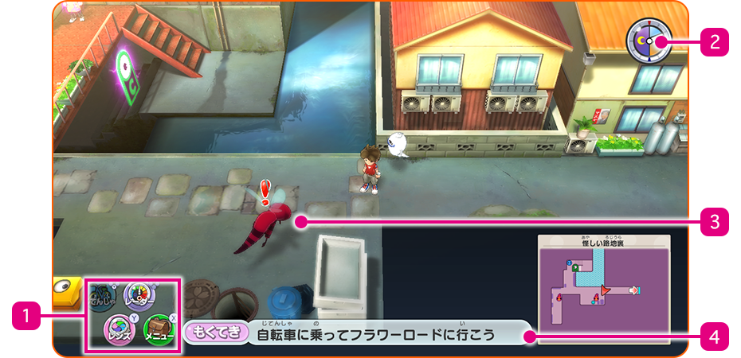
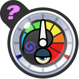
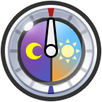
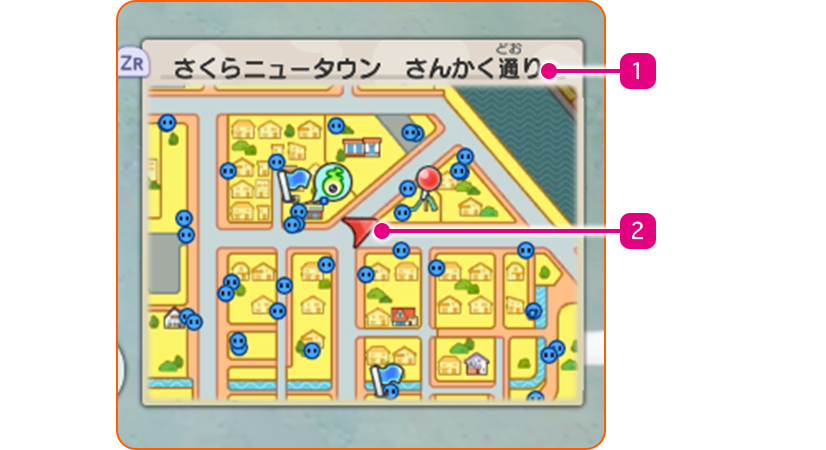
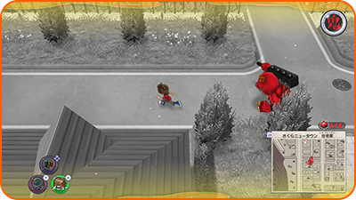

Pantalla de la zona
Zona abierta

- 1Iconos del menú
-
Puedes realizar las siguientes acciones si pulsas los botones correspondientes.
| Cruceta abajo | Subirte a / Bajarte de la bicicleta |
|---|---|
| Cruceta arriba | Cambiar la vista del radar Yo-kai |
| Ⓨ | Activar la lente Yo-kai |
| Ⓧ | Abrir el menú principal |
- 2Radar Yo-kai / Yo-kai Watch
-
Puedes alternar libremente entre estas dos funciones.
- 3Icono del enemigo
-
Si te cruzas con un enemigo, iniciaréis un combate.
- 4Objetivo actual
-
Se mostrará automáticamente tras un periodo breve de inactividad.
 |
Cuando te aproximes a un Yo-kai oculto, la aguja del radar se moverá en el sentido de las agujas del reloj. Encontrarás al Yo-kai oculto cerca del lugar donde el radar se vuelva de color rojo. |
|---|---|
 |
Consulta la hora actual. |
Minimapa
Pulsa el botón ZR para cambiar la vista del minimapa.

- 1Nombre de la ubicación actual
- 2Iconos del minimapa
- Objetivo
- Dirección hacia el objetivo
- Ubicación actual
- Yo-kai
- Ignóculo
- Personal de las tiendas
- Personajes y animales con los que puedes hablar
- Yo-kai a los que te puedes enfrentar si los tocas
- Relocerrojo
- Petición
※ También pueden aparecer otros iconos.
Pesadilla súbita
De vez en cuando, durante tus paseos por la ciudad, una cuenta atrás aparecerá de la nada. Esto significa que estás a punto de entrar en... ¡la pesadilla súbita!
※ ¡Intenta conseguir tantos cofres del tesoro como puedas mientras evitas al oni y encuentras la salida!
El movimiento del oni
Una vez que te vea, el oni empezará a perseguirte. Si te atrapa, comenzará un combate.
¡También te empezará a perseguir si uno de sus subordinados te ve!

Escapar de la pesadilla súbita
Encuentra la salida para escapar de la pesadilla súbita.